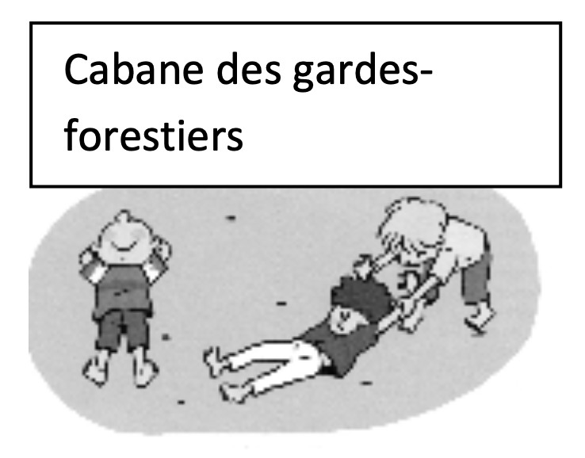

Objectif d'apprentissage
Réalisation d'actions motrices de plus en plus élaborées, accepter la coopération avec les partenaires.
But
Pour les singes paresseux : se faire le plus lourd possible.
Pour les gardes forestiers : ramener un singe paresseux dans leur cabane en les traînant par les bras.
Critères de réussite
- Les singes ont tous été transportés dans la cabane des gardes forestiers.
Règles
- Au signal, les gardes forestiers doivent transporter les singes paresseux jusqu'à leur cabane.
- Les singes restent immobiles. Un singe par garde.
Organisation
Terrain de 15m x 15m avec une cabane matérialisée sur une limite du terrain.
Modalités d'exécution
- Les singes se laissent transporter. Les saisies se font par les bras.
Évolutions
- Collaboration obligatoire pour transporter un singe.
- Varier les saisies.
- Imposer un temps limité.